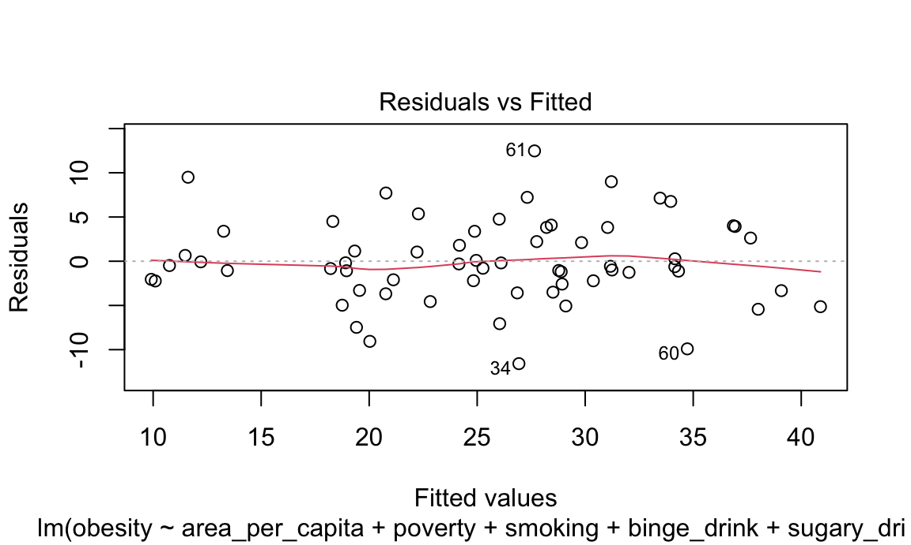
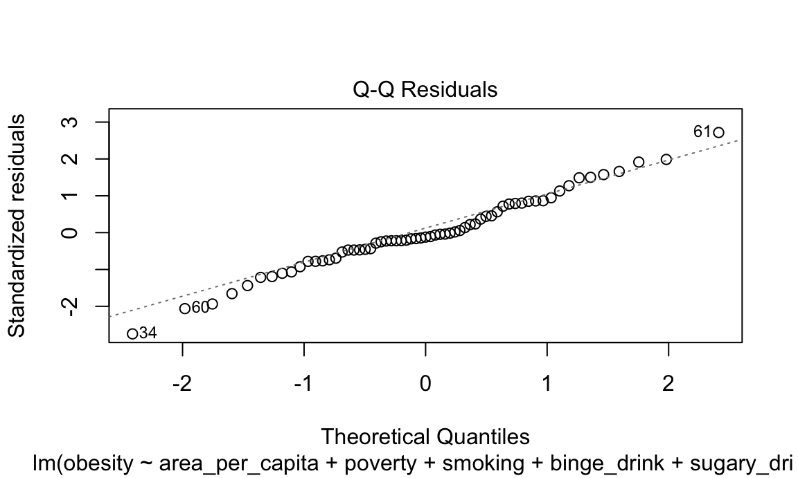
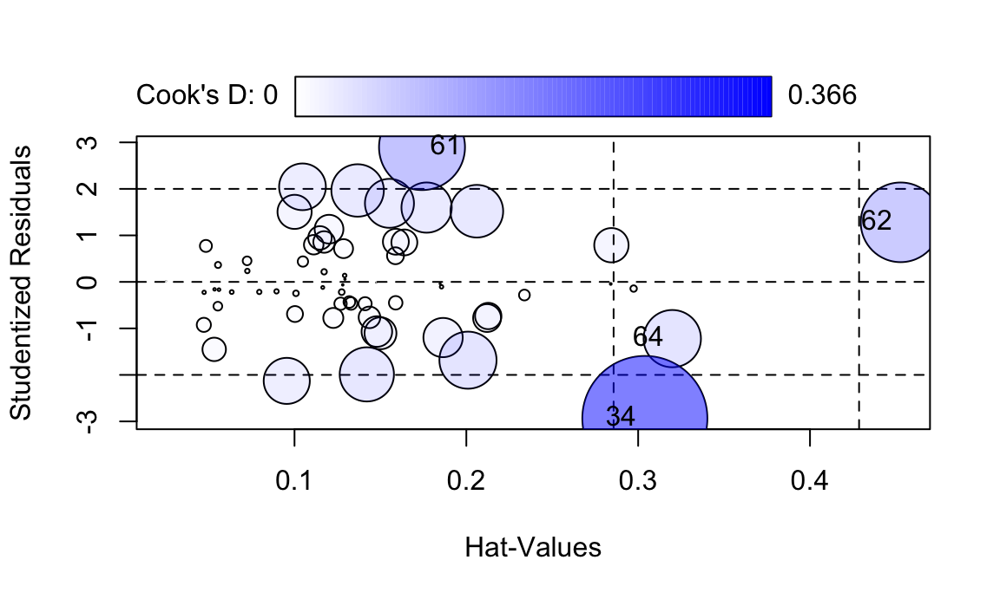
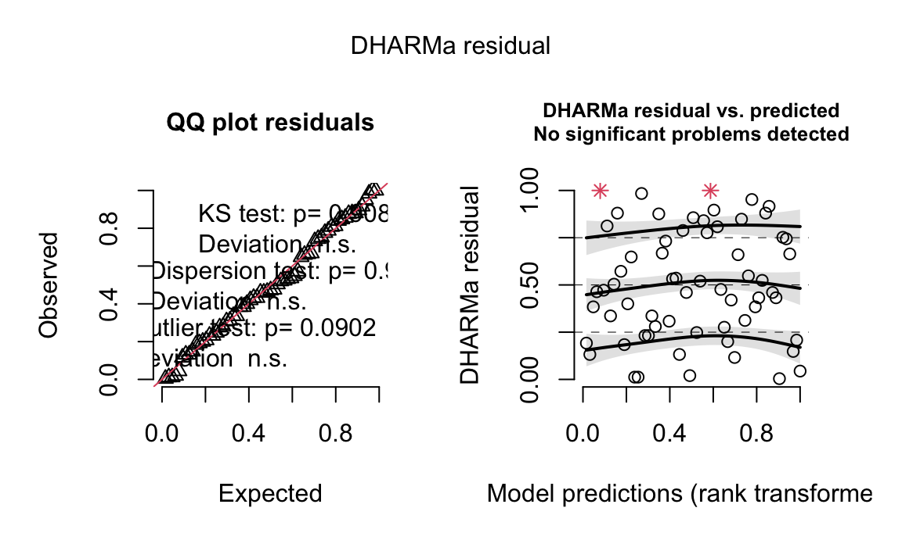
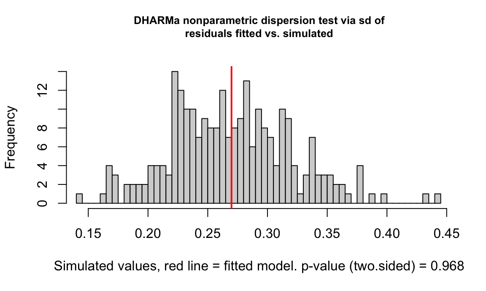
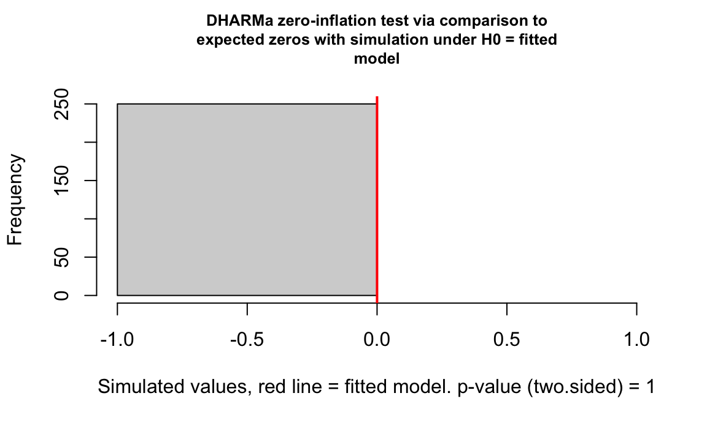

source("01_datacleaning.R")## Rows: 2054 Columns: 34
## ── Column specification ──────────────────────────────────────────────────────────────
## Delimiter: ","
## chr (22): ACQUISITIONDATE, ADDRESS, BOROUGH, CLASS, COUNCILDISTRICT, DEPARTM...
## dbl (1): PRECINCT
## num (7): ACRES, COMMUNITYBOARD, GISOBJID, NYS_ASSEMBLY, NYS_SENATE, OBJECTI...
## lgl (4): PERMIT, PIP_RATABLE, RETIRED, WATERFRONT
##
## ℹ Use `spec()` to retrieve the full column specification for this data.
## ℹ Specify the column types or set `show_col_types = FALSE` to quiet this message.
## New names:## Warning: There was 1 warning in `filter()`.
## ℹ In argument: `borough == c("B", "M", "Q", "R", "X")`.
## Caused by warning in `borough == c("B", "M", "Q", "R", "X")`:
## ! longer object length is not a multiple of shorter object length## Warning: There was 1 warning in `mutate()`.
## ℹ In argument: `uninsured = as.numeric(uninsured)`.
## Caused by warning:
## ! NAs introduced by coercionlibrary(tidyverse)
library(readxl)
library(plotly)
library(sf)
library(betareg)
library(lmerTest)## Loading required package: lme4
## Loading required package: Matrix
##
## Attaching package: 'Matrix'
##
## The following objects are masked from 'package:tidyr':
##
## expand, pack, unpack
##
##
## Attaching package: 'lmerTest'
##
## The following object is masked from 'package:lme4':
##
## lmer
##
## The following object is masked from 'package:stats':
##
## steplibrary(car)## Loading required package: carData
##
## Attaching package: 'car'
##
## The following object is masked from 'package:dplyr':
##
## recode
##
## The following object is masked from 'package:purrr':
##
## somelibrary(effects)## lattice theme set by effectsTheme()
## See ?effectsTheme for details.library(DHARMa)## This is DHARMa 0.4.7. For overview type '?DHARMa'. For recent changes, type news(package = 'DHARMa')library(glmmTMB)## Warning in check_dep_version(dep_pkg = "TMB"): package version mismatch:
## glmmTMB was built with TMB package version 1.9.17
## Current TMB package version is 1.9.18
## Please re-install glmmTMB from source or restore original 'TMB' package (see '?reinstalling' for more information)knitr::opts_chunk$set(
fig.width = 6,
fig.asp = .6,
out.width = "90%"
)
theme_set(theme_minimal() + theme(legend.position = "bottom"))
options(
ggplot2.continuous.colour = "viridis",
ggplot2.continuous.fill = "viridis"
)
scale_colour_discrete = scale_colour_viridis_d
scale_fill_discrete = scale_fill_viridis_ddf_analysis <-
df_analysis |>
mutate(
obesity = as.numeric(obesity),
poverty = as.numeric(poverty),
smoking = as.numeric(smoking),
binge_drink = as.numeric(binge_drink),
sugary_drink = as.numeric(sugary_drink),
pedestrian_hosp = as.numeric(pedestrian_hosp),
uninsured = as.numeric(uninsured)
)
model_mlr <- lm(
obesity ~ area_per_capita + poverty + smoking + binge_drink +
sugary_drink + pedestrian_hosp + edu_college_degree_and_higher + uninsured,
data = df_analysis
)
summary(model_mlr)##
## Call:
## lm(formula = obesity ~ area_per_capita + poverty + smoking +
## binge_drink + sugary_drink + pedestrian_hosp + edu_college_degree_and_higher +
## uninsured, data = df_analysis)
##
## Residuals:
## Min 1Q Median 3Q Max
## -11.5823 -2.4092 -0.5756 3.3853 12.4744
##
## Coefficients:
## Estimate Std. Error t value Pr(>|t|)
## (Intercept) 28.0474431 7.9189279 3.542 0.000828 ***
## area_per_capita -0.0006714 0.0024368 -0.276 0.783964
## poverty -0.4591853 0.1905760 -2.409 0.019415 *
## smoking 0.0689351 0.1941429 0.355 0.723917
## binge_drink -0.0832997 0.1369300 -0.608 0.545514
## sugary_drink 0.5754605 0.1246382 4.617 2.45e-05 ***
## pedestrian_hosp 0.2474159 0.1196513 2.068 0.043463 *
## edu_college_degree_and_higher -0.2546617 0.0882145 -2.887 0.005585 **
## uninsured -0.0593239 0.1443250 -0.411 0.682667
## ---
## Signif. codes: 0 '***' 0.001 '**' 0.01 '*' 0.05 '.' 0.1 ' ' 1
##
## Residual standard error: 5.052 on 54 degrees of freedom
## (2 observations deleted due to missingness)
## Multiple R-squared: 0.7322, Adjusted R-squared: 0.6926
## F-statistic: 18.46 on 8 and 54 DF, p-value: 5.882e-13linear relationship and equal variances
plot(model_mlr, which = 1)
heavy tail conpared with normal distribution
plot(model_mlr, which = 2)
there are some outliers
influencePlot(model_mlr)
## StudRes Hat CookD
## 34 -2.935173 0.3038918 0.36624598
## 61 2.897178 0.1741979 0.17303938
## 62 1.280940 0.4527428 0.14905677
## 64 -1.220125 0.3198448 0.07708756no obvious multicollinearity
vif(model_mlr)## area_per_capita poverty
## 1.515675 4.233308
## smoking binge_drink
## 1.985294 1.444823
## sugary_drink pedestrian_hosp
## 2.647827 2.068471
## edu_college_degree_and_higher uninsured
## 5.867964 2.029569theoretically, poverty and sugary_drink should have strong linear relationships, however in this dataset, they don’t. Besides, the effect of poverty on obesity in this dataset is also not significant. Maybe we should pay more attention on the origin of this poverty data.
no autocorrelation between residuals
lmtest::dwtest(model_mlr)##
## Durbin-Watson test
##
## data: model_mlr
## DW = 1.9946, p-value = 0.3748
## alternative hypothesis: true autocorrelation is greater than 0df <- df_analysis
influential_points <- c(34, 60, 61, 64, 65)
df_no_inf <- df[-influential_points, ]
model_mlr_no_inf <- lm(formula(model_mlr), data = df_no_inf)
summary(model_mlr_no_inf)##
## Call:
## lm(formula = formula(model_mlr), data = df_no_inf)
##
## Residuals:
## Min 1Q Median 3Q Max
## -7.6274 -2.2404 -0.2986 2.2098 9.5423
##
## Coefficients:
## Estimate Std. Error t value Pr(>|t|)
## (Intercept) 21.8197199 7.3091194 2.985 0.00441 **
## area_per_capita -0.0007606 0.0025690 -0.296 0.76842
## poverty -0.4449205 0.1767957 -2.517 0.01517 *
## smoking 0.1764506 0.1841834 0.958 0.34276
## binge_drink 0.0017782 0.1223450 0.015 0.98846
## sugary_drink 0.5816249 0.1079865 5.386 2.03e-06 ***
## pedestrian_hosp 0.2844868 0.1094340 2.600 0.01230 *
## edu_college_degree_and_higher -0.2253552 0.0795815 -2.832 0.00670 **
## uninsured 0.0240920 0.1267345 0.190 0.85002
## ---
## Signif. codes: 0 '***' 0.001 '**' 0.01 '*' 0.05 '.' 0.1 ' ' 1
##
## Residual standard error: 4.296 on 49 degrees of freedom
## (2 observations deleted due to missingness)
## Multiple R-squared: 0.8124, Adjusted R-squared: 0.7817
## F-statistic: 26.52 on 8 and 49 DF, p-value: 2.685e-15Overall, after removing the outliers, the outcome is very similar to
the former one, so mlr model is stable enough for analysing
obesity.
Only the coefficient for pedestrian_hosp showed noticeable sensitivity,
suggesting that its effect may be driven by a few extreme
communities.
Influence diagnostics identified several observations with high leverage (IDs 34, 60, 61, 64, 65). To assess the robustness of our findings, we re-estimated the multivariable linear model after removing these influential points.
The direction and significance of the main predictors remained unchanged, and p-values exhibited minimal variation. This indicates that the observed associations are not driven by a few extreme communities.
Therefore, all observations were retained in the final analysis.
n <- nrow(df_analysis)
df_new <- df_analysis |>
mutate(p_obesity = (obesity/100)*(n-1)/n + 0.5/n)
model_beta <- glmmTMB(
p_obesity ~ area_per_capita + poverty + smoking + binge_drink +
sugary_drink + pedestrian_hosp + edu_college_degree_and_higher + uninsured,
family = beta_family(link = "logit"),
data = df_new
)
summary(model_beta)## Family: beta ( logit )
## Formula:
## p_obesity ~ area_per_capita + poverty + smoking + binge_drink +
## sugary_drink + pedestrian_hosp + edu_college_degree_and_higher +
## uninsured
## Data: df_new
##
## AIC BIC logLik -2*log(L) df.resid
## -189.7 -168.2 104.8 -209.7 53
##
##
## Dispersion parameter for beta family (): 84.2
##
## Conditional model:
## Estimate Std. Error z value Pr(>|z|)
## (Intercept) -6.738e-01 3.985e-01 -1.691 0.090885 .
## area_per_capita -3.133e-05 1.409e-04 -0.222 0.824037
## poverty -2.551e-02 9.293e-03 -2.745 0.006053 **
## smoking 2.694e-03 9.705e-03 0.278 0.781357
## binge_drink -5.631e-03 7.047e-03 -0.799 0.424251
## sugary_drink 2.765e-02 5.904e-03 4.683 2.82e-06 ***
## pedestrian_hosp 1.200e-02 5.757e-03 2.084 0.037144 *
## edu_college_degree_and_higher -1.668e-02 4.565e-03 -3.654 0.000258 ***
## uninsured -3.415e-03 7.061e-03 -0.484 0.628659
## ---
## Signif. codes: 0 '***' 0.001 '**' 0.01 '*' 0.05 '.' 0.1 ' ' 1res_beta <- simulateResiduals(model_beta)
plot(res_beta)
testDispersion(res_beta)
##
## DHARMa nonparametric dispersion test via sd of residuals fitted vs.
## simulated
##
## data: simulationOutput
## dispersion = 0.99925, p-value = 0.968
## alternative hypothesis: two.sidedtestZeroInflation(res_beta)
##
## DHARMa zero-inflation test via comparison to expected zeros with
## simulation under H0 = fitted model
##
## data: simulationOutput
## ratioObsSim = NaN, p-value = 1
## alternative hypothesis: two.sidedWe assessed model fit using simulated residuals generated through the DHARMa package. No significant deviations from model assumptions were detected. The uniform quantile-quantile plot showed no deviations (KS test p = 0.98). The dispersion test indicated no overdispersion (p = 0.97), and the zero-inflation test suggested no excess zeros (p = 1). Residuals were evenly distributed across predicted values, with no evidence of nonlinearity or heteroskedasticity. Overall, the diagnostic results confirm that the beta regression model provides an adequate fit to the data.
model_beta_mixed <- glmmTMB(
p_obesity ~ area_per_capita + poverty + smoking + binge_drink +
sugary_drink + pedestrian_hosp + edu_college_degree_and_higher + uninsured +
(1 | borough),
family = beta_family(link = "logit"),
data = df_new
)## Warning in (function (start, objective, gradient = NULL, hessian = NULL, :
## NA/NaN function evaluationsummary(model_beta_mixed)## Family: beta ( logit )
## Formula:
## p_obesity ~ area_per_capita + poverty + smoking + binge_drink +
## sugary_drink + pedestrian_hosp + edu_college_degree_and_higher +
## uninsured + (1 | borough)
## Data: df_new
##
## AIC BIC logLik -2*log(L) df.resid
## -187.7 -164.1 104.8 -209.7 52
##
## Random effects:
##
## Conditional model:
## Groups Name Variance Std.Dev.
## borough (Intercept) 3.925e-11 6.265e-06
## Number of obs: 63, groups: borough, 6
##
## Dispersion parameter for beta family (): 84.2
##
## Conditional model:
## Estimate Std. Error z value Pr(>|z|)
## (Intercept) -6.738e-01 3.985e-01 -1.691 0.090885 .
## area_per_capita -3.133e-05 1.409e-04 -0.222 0.824035
## poverty -2.551e-02 9.293e-03 -2.745 0.006053 **
## smoking 2.693e-03 9.705e-03 0.278 0.781360
## binge_drink -5.631e-03 7.047e-03 -0.799 0.424253
## sugary_drink 2.765e-02 5.904e-03 4.683 2.82e-06 ***
## pedestrian_hosp 1.200e-02 5.757e-03 2.084 0.037144 *
## edu_college_degree_and_higher -1.668e-02 4.565e-03 -3.654 0.000258 ***
## uninsured -3.415e-03 7.061e-03 -0.484 0.628651
## ---
## Signif. codes: 0 '***' 0.001 '**' 0.01 '*' 0.05 '.' 0.1 ' ' 1anova(model_beta, model_beta_mixed)## Data: df_new
## Models:
## model_beta: p_obesity ~ area_per_capita + poverty + smoking + binge_drink + , zi=~0, disp=~1
## model_beta: sugary_drink + pedestrian_hosp + edu_college_degree_and_higher + , zi=~0, disp=~1
## model_beta: uninsured, zi=~0, disp=~1
## model_beta_mixed: p_obesity ~ area_per_capita + poverty + smoking + binge_drink + , zi=~0, disp=~1
## model_beta_mixed: sugary_drink + pedestrian_hosp + edu_college_degree_and_higher + , zi=~0, disp=~1
## model_beta_mixed: uninsured + (1 | borough), zi=~0, disp=~1
## Df AIC BIC logLik deviance Chisq Chi Df Pr(>Chisq)
## model_beta 10 -189.67 -168.24 104.83 -209.67
## model_beta_mixed 11 -187.67 -164.09 104.83 -209.67 0 1 1We compared a beta mixed-effects model with a random intercept for borough to a marginal beta regression model without random effects, using a likelihood ratio test. The random intercept variance was essentially zero (≈ 4×10⁻¹¹), and the likelihood ratio test was not significant (p = 1). AIC values for the two models were nearly identical. These results indicate that little residual variability remains between boroughs after adjusting for covariates, so we proceeded with the simpler marginal beta regression model.